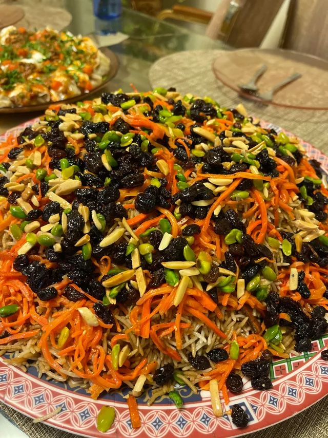

Kabuli

Kabuli is a healthy and delicious Afghani food that i like it
ingredients
- Basmati rice
- Lamb or chicken (or sometimes beef or goat)
- Onions
- Carrots
- Raisins
- Almonds
- Cooking oil or ghee
- Cumin seeds
- Cardamom pods
- Cinnamon sticks
- Salt and pepper
How to cook Kabuli?
- Rinse the basmati rice and soak it in water for about 30 minutes.
- In a large pot, heat oil or ghee and sauté sliced onions until golden brown. Remove some for garnish.
- Add the meat (lamb, chicken, or beef) to the pot and brown it on all sides.
- Add water, cumin seeds, cardamom pods, cinnamon sticks, cloves, bay leaves, salt, and pepper. Bring to a boil, then reduce heat and simmer until the meat is tender.
- In a separate pan, fry matchstick-cut carrots until they start to caramelize, then set them aside
- Once the meat is cooked, remove it from the pot and set it aside.
- In the same pot, layer the soaked rice over the meat broth, then add the cooked meat on top.
- Sprinkle the fried carrots, raisins, and almonds over the rice.
- Cover the pot and cook on low heat until the rice is tender and has absorbed the flavors
- Garnish with the reserved fried onions before serving.